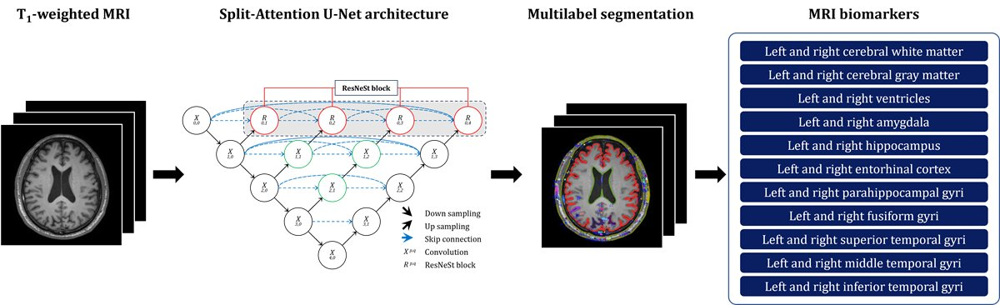
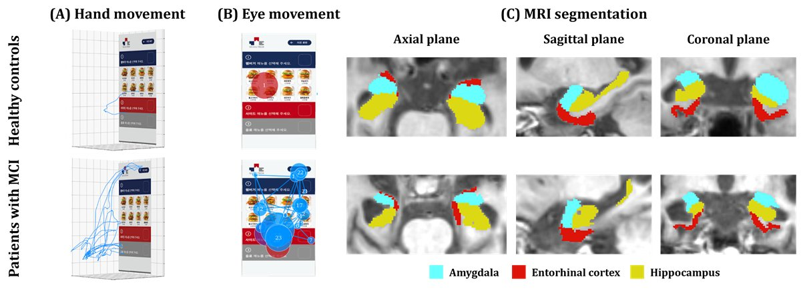

01Question연구 질문
VR captures everyday behavior; MRI captures brain structure. Earlier work only analyzed them side by side. Do they carry complementary information, and how should each be used in a real screening pathway?
VR은 일상 행동을, MRI는 뇌 구조를 측정합니다. 기존 연구는 두 데이터를 나란히 분석하는 데 그쳤어요. 둘은 서로 보완적인 정보를 담고 있을까요? 실제 선별 과정에서 각각 어떻게 써야 할까요?
02Data and features데이터와 feature
- 54 participants: 22 healthy controls, 32 MCI.참여자 54명: 정상 22명, MCI 32명.
- VR: hand movement speed, scanpath length, time to completion, number of errors.VR: 손 움직임 속도, 시선 경로 길이, 과제 완료 시간, 오류 수.
- MRI: a split-attention U-Net segmented T1 scans into 22 regional volumes (11 per hemisphere), normalized by intracranial volume.MRI: split-attention U-Net으로 T1 영상을 22개 영역(반구당 11개) 부피로 분할하고 두개내 용적(ICV)으로 정규화했어요.


03Results — compare the models결과 — 모델 비교
Notice the pattern when you switch between sensitivity and specificity: VR is better at confirming who is healthy (higher specificity), while MRI is better at catching MCI (higher sensitivity). Together they reach 100% sensitivity.
민감도와 특이도를 번갈아 보면 패턴이 보여요. VR은 정상인을 정상으로 확인하는 데(특이도), MRI는 MCI를 놓치지 않는 데(민감도) 강합니다. 둘을 합치면 민감도가 100%가 돼요.
04A two-stage screening pathway2단계 선별 체계 제안
That complementarity suggests a protocol: screen large populations quickly and cheaply with VR, then send only suspected cases to an MRI-based assessment. VR behavior also correlated significantly with hippocampal, amygdala and entorhinal volumes, giving the behavioral markers a physiological basis.
이 보완성은 하나의 프로토콜로 이어집니다. 먼저 빠르고 저렴한 VR로 대규모 인구를 선별하고, 의심되는 경우만 MRI를 포함한 확진으로 보내는 방식이에요. VR 행동 지표는 해마·편도체·내후각피질 부피와도 유의한 상관이 있어, 행동 지표의 생리학적 근거가 됩니다.

05My contribution나의 기여
- Co-first author: built the VR–MRI–neuropsychological dataset with clinicians, ran the VR–MRI association analysis, and designed the two-stage screening pathway.공동 제1저자: 의료진과 VR·MRI·신경심리검사 데이터셋을 구축하고, VR–MRI 연관성 분석과 2단계 선별 체계를 설계했습니다.